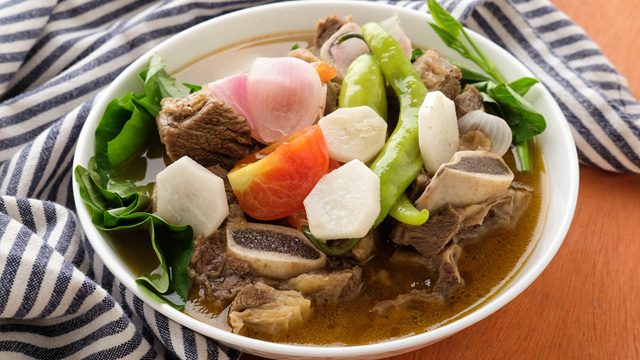

Adobo
Adobo

DESCRIPTION
Chicken Adobo is a type of Filipino chicken stew. Chicken pieces are marinated in soy sauce and spices, pan-fried, and stewed until tender. The dish gained popularity because of its delicious taste and ease in preparation.
INGREDIENTS
- 1 tablespoon vegetable oil
- 6 bone-in, skinless chicken thighs
- 3 cloves garlic, minced
- ⅔ cup apple cider vinegar
- ⅓ cup soy sauce
- 1 teaspoon whole black peppercorns
- 1 bay leaf
STEPS
- Heat oil in a medium frying pan over medium-high heat. Add chicken and cook until lightly browned, about 5 minutes, then turn over and cook an additional 5 minutes. Transfer chicken to a plate and set aside.
- Pour off all but 1 tbsp. of pan drippings and return pan to low heat. Add garlic and sauté until soft, about 1 minute. Add remaining ingredients and stir to incorporate. Return chicken to pan and cook, covered, for 20 minutes.
- Uncover, increase heat to medium-low and cook 15 to 20 minutes more, occasionally spooning sauce over chicken, until sauce thickens a bit and chicken is tender and nicely glazed with sauce. Remove bay leaf before eating.
Sinigang
Sinigang

DESCRIPTION
A one-pot meal like Beef Sinigang (Sinigang na Baka) with the ingredients of healthy choices – a vegetable that provides many nutrients including potassium, dietary fiber, vitamin A and C. While meat like beef supply nutrients that include protein, vitamin B and E, iron, zinc, and magnesium. This stew is authentic food for Filipinos because of the way it has made.
INGREDIENTS
- 1 kg beef brisket/ribs cut into cube
- large Red Onion, chopped
- 1 pack Tamarind Sinigang Mix
- 2 medium Tomatoes, chopped
- 4 pieces small Taro
- 4 pcs. Okra medium sized, cut into two
- 1 packet Spinach leaves
- Fish Sauce
- Pepper
STEPS
- Put the Beef and Onion in a pot.
- Pour water in a pot until the meat is barely covered bring to a boil then simmer for 45 minutes.
- Add the taro and chopped tomatoes, bring to a boil then simmer additional for 40 minutes.
- Add the Sinigang Mix and Okra then cook for 5 minutes.
- Add the spinach, season with pepper and fish sauce.
- Add Salt according to Taste.
- Serve Hot.
Beef Brocolli
Beef Brocolli

DESCRIPTION
Beef and Broccoli is an easy, 1-pan, 30-minute meal that is loaded with fresh broccoli, tender nutrition-packed beef, and the best stir fry sauce.
INGREDIENTS
- 1 lb. beef sliced into thin pieces
- 2 cups broccoli cut into florets
- 2 teaspoons ginger minced
- 2 cloves garlic minced
- 1 tablespoon cornstarch
- 1/2 to 3/4 cups water optional
- ¼ cup cooking oil
- Salt and ground black pepper to taste
Marinade Ingredients
- 1/4 cup oyster sauce
- 1 tablespoon Knorr Liquid Seasoning
- 1/2 teaspoon Sesame oil optional
- 3 tablespoons cooking wine optional
- 1 teaspoon granulated white sugar
STEPS
- Combine beef, oyster sauce, Knorr Liquid Seasoning, Sesame oil, cooking wine, and sugar in a bowl. Mix well. Marinate beef for 15 minutes. Add cornstarch and mix to blend with all the ingredients. Set aside.
- Heat 2 tablespoons cooking oil in a cooking pot. Sauté ginger and garlic. Add broccoli before the garlic starts to brown. Stir-fry for 1 to 2 minutes. Remove from the pot. Set aside.
- Pour the remaining oil into the pot. Add marinated beef once the oil gets hot. Stir-fry until the beef browns. You can add water to tenderize the beef further. If water is added, let it boil and stir as it evaporates. Add salt and ground black pepper to taste.
- Put the cooked broccoli into the pot with the beef. Stir-fry for 3 minutes.
- Transfer to a serving plate. Serve!
Bulalo
Bulalo

DESCRIPTION
It’s a well known fact that Filipinos love stew and soup dishes. From the sour sinigang to the sweet tinola, there’s guaranteed to be a soup dish for every flavor palate preference –– all great to sip and enjoy, especially during long, cool nights. But one of the most popular, and arguably most delicious, soups out there, is the classic Bulalo, or beef shank stew.
INGREDIENTS
- 2 lbs beef shank
- ½ cabbage whole leaf individually detached
- 1 bundle bok choy
- 2 cobs corn each cut into 3 parts
- 2 Tablespoons whole peppercorn
- 1/2 cup green onions cut unto 1 1/2 inch pieces
- 1 onion
- 34 ounces water
- fish sauce to taste optional
STEPS
- In a big cooking pot, pour in water and bring to a boil.
- Put-in the beef shank followed by the onion and whole pepper corn then simmer for 1.5 hours (30 mins if using a pressure cooker) or until meat is tender.
- Add the corn and simmer for another 10 minutes
- Add the fish sauce,cabbage, pechay, and green onion (onion leeks)
- Serve hot. Share and Enjoy!
Kare kare
Kare kare

DESCRIPTION
Beef Kare-Kare is a version of kare-kare or peanut stew that makes use of beef chuck, instead of the traditional oxtail. It is as good as our other versions of kare kare. It was perfect with some spicy shrimp paste. The vegetables used in this recipe were blanched so that you can have the option to serve it separately from the stew. It is also a good idea if you plan to bring this dish with you on a picnic or a potluck event because the dish can be plated nicely.
INGREDIENTS
- 2 lbs. beef chuck sliced into cubes
- 1 bunch string beans also known as snake beans, cut into 2 inch length
- 1 bundles bok choy lower end tip cut-off
- 1 large Chinese eggplant sliced
- 1 1/2 cup ground roasted peanuts
- 1 to 2 tablespoons annatto powder
- 2 tablespoons glutinous rice powder
- 1 large yellow onion
- 2 teaspoons minced garlic
- 4 tablespoons cooking oil
- 2 to 3 tablespoons fish sauce
- 4 cups beef broth
- 1/8 teaspoon ground black pepper
- ½ cup water
STEPS
- Heat the oil. Sauté the onion and add the garlic. Continue to sauté until the onion gets soft.
- Sprinkle some ground black pepper. Stir. Add the beef and cook until the color turns light brown.
- Put the ground peanuts in with the beef. Stir and cook for 2 minutes.
- Pour the beef broth in the pan. Let boil. Cover and simmer until the beef gets tender (around 60 to 90 minutes.). You can add water or beef broth if needed.
- Meanwhile, prepare to blanch the string beans, eggplant, and bok choy. Boil 4 cups of water in a pot. Put the vegetables in boiling water by batches. Boil the string beans for 2 minutes. Remove from boiling water and immediately put in a bowl with cold water and ice. Remove from the bowl with cold water and put in a clean plate. Do the same steps for the remaining vegetables.
- Once the beef gets tender. Add the fish sauce and the mixture of annatto powder, ½ cup water, and glutinous rice flour. Stir. Continue to cook until the texture of the sauce thickens (3 to 5 minutes in medium heat).
- Transfer to a serving bowl. Arrange the blanched vegetables on the side and top with shrimp paste (bagoong alamang).
- Serve with warm rice. Share and enjoy!